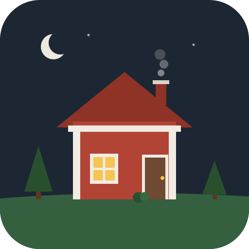
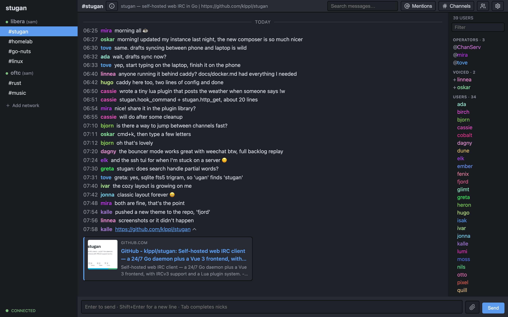
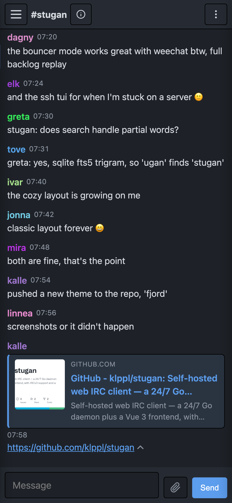
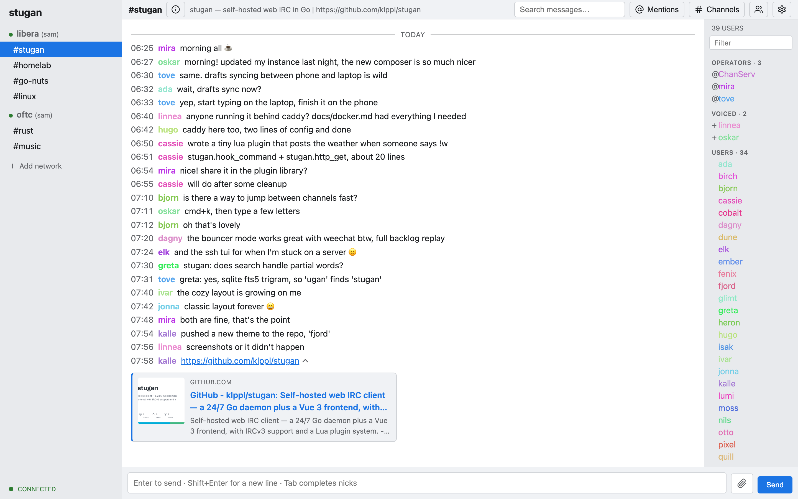
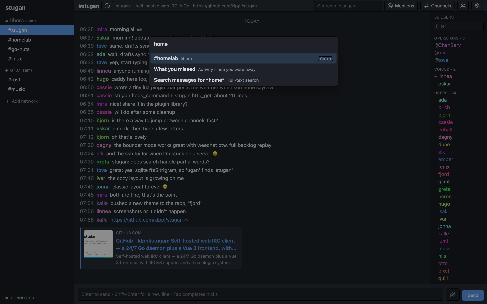
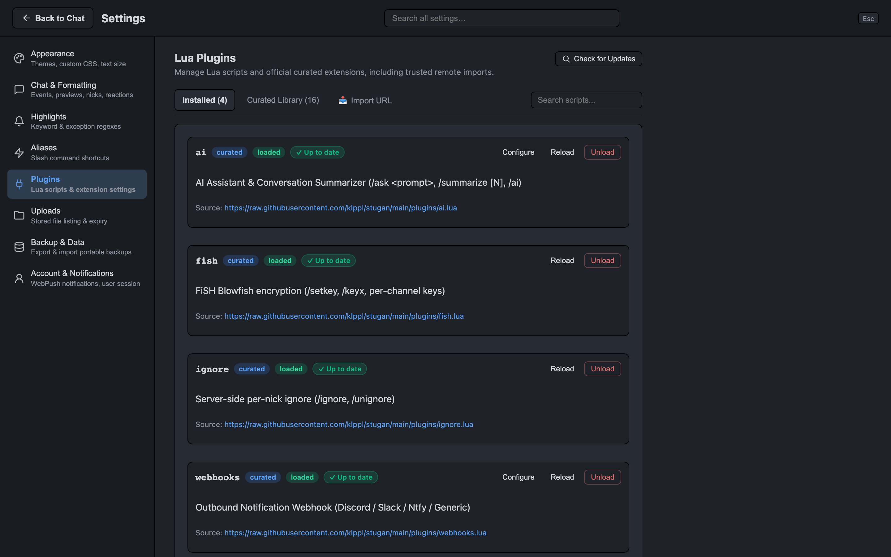

stugan
A self-hosted, always-on web IRC client. Written in Go, extended with Lua.





Features
- Always on. Stays connected and keeps history when your browser is closed.
- Syncs everywhere. Read markers, settings and unsent drafts follow you across devices.
- Full-text search. Search all your history, partial words included.
- Modern IRCv3. Reactions, replies, typing indicators, read markers, chathistory and more.
- Keyboard first. Cmd/Ctrl-K jumper, Tab completion, shortcuts for everything.
- Lua plugins. Commands, filters, hooks and timers, with hot reload and a curated library.
- Previews & uploads. Link previews, inline images and video, paste-to-upload.
- Built-in bouncer. Connect WeeChat, HexChat, irssi or any other IRC client too.
- Upgrade without dropping IRC. The optional stugan-engine holds your connections while stugan restarts. Nobody sees you quit, and nothing is missed.
- SSH terminal UI. Reach your session from any terminal.
- Installable PWA. Works on phones, with push notifications.
- Multi-user. Separate accounts with isolated networks and history.
- Easy backups. Export and restore everything in one click.
Get started
Run it with Docker (linux/amd64):
docker run -d --name stugan -p 8080:8080 -v stugan-data:/data \ ghcr.io/klppl/stugan:latest
Inside a container, stugan must listen on all interfaces: put a
config.toml with listen = "0.0.0.0:8080" under [server]
in the /data volume, then open http://localhost:8080.
To keep IRC connected across upgrades, run it together with stugan-engine instead:
cat > .env <<EOF COMPOSE_PROFILES=engine STUGAN_ENGINE_URL=tcp://stugan-engine:8016 STUGAN_ENGINE_SECRET=$(openssl rand -hex 32) EOF docker compose up -d
See the Docker guide for reverse proxy and TLS, or build from source.